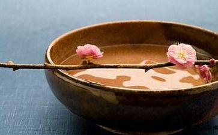

今天跟老公分析，我学佛的动力怎么来的，虔诚感恩为什么这么自然，为什么他不明显。我认真的回忆了一下，不觉吓了一跳，原来放生学佛以来，我身上的奇迹有这么多。
一高兴就倒霉
一年半前，我有很多持续了很多年各种折腾都好不了的毛病：一个月最少会感冒最少2、3次。动不动就头疼，会一直疼到眼冒金星，反胃；一感冒一上火，扁桃就肿大很多天，最严重的时候肿到呼吸都困难，别提每吞咽一次口水了；鼻炎经常犯，严重的时候我只能张着嘴喘气，能有一个鼻孔通一下都是奢求；有慢性肠胃炎，基本上一星期最少拉肚子一次，长期隐约的疼；不能坐直，会腰疼，疼的要断了一样，基本只能往前各种斜着坐；不能久站，每次坐公车，没有座位，半小时不到，腰就疼的受不了了；走不动路，去老公老家，下车走半小时不到就走不动了，腰疼腿疼脚疼，必须得腾个人骑摩托车来接；四季手脚都是凉的，一到冬天，洗热水澡都不行，一夜一夜，靠吸取老公身上的热量来熬过去，天到亮了，也不一定脚能暖；动不动就觉得风寒的吹到骨头毛孔里，冰一样的彻骨凉；不能补，动不动就上火；右腿一年有几次会难受的睡不成觉，捏不到锤不着，就是骨头里头难受。不管怎么睡，都没精神，9点以前强制起床的话，头更晕乎，人也会反应迟钝……这些毛病想了多少方法，吃了多少药，输液，各种折腾。好不了，我都认命了。反正折磨久了，就没所谓了。脾气也相应的大的不行。跟老公那么好脾气的人，都能老吵架，怄气。而且最神奇的是，只要一高兴，就一定会倒霉！受伤！
记得最清楚的是2次，跟老公的好朋友去采杨梅，一直都挺高兴，除了相机突然坏了。心里还想，这次还算好，只是坏了机器人没事，突然洗着澡，就摔坐下去起不来了，老公把我提到床上，疼了很多天，连弯腰拿重物都疼的要命；去看电影，我还记得很清楚，龙门飞甲，回来两个人高兴的在那比划，就1米多的距离，我对着老公扑过去，他一蹲身把我扛起来，一声很轻微的响声，然后我突然不能喘气不能动弹，大概一分钟吧，才缓过来，觉得可能是挫伤了。接下来每天睡觉都不能动弹，一动疼的喘不了气，云南喷雾剂也喷了，没用。熬了快一星期，实在是感觉越来越受不了了，去看医生，拍片结果，胸骨裂了……说原因医生患者们都在笑，你们这也太夸张了……存不了钱，好容易攒个几千块，这样那样的事儿，就没有了。这些也都认命了。越来越痛苦的是，每到逢年过节，必然会跟老公吵架，但凡节日，就莫名其妙的要吵一架。
因为想脱离苦海，所以去求道，认识了一位财神庙的道长，还去供灯，求财求平安。期间也有2次很玄妙的小事件，让我生起了一些敬畏神灵的心。一次在赵公明的塑像前，正准备磕头，突然来电话了，我犹豫了一下，还是先接电话了，边接边聊笑的很开心。挂了电话去磕头，供桌明明离我有点远，我却在磕头的时候撞到头了！心里咯噔一下。赶紧默默道歉，再拜的时候头刻意伸长也够不着桌子了。还有一次也是在赵公明塑像前，人多，大殿有3扇门，3张排在一起的摆垫，我本来站在侧门的摆垫前准备拜了，看见中间位置的人起来了，就想着去那边，然后，刚一起来，左右脚莫名一拌，直接又跪下了。赶紧默默道歉。咨询道长，是护法神小施惩戒。后来有机会跟着道长去参加大放生，还有一位和尚师父开着越野车跟着，好多人，好多鸟啊泥鳅，去了好远的嵩明水库，大太阳下，一场法事终于完毕，大家争抢着去放，我看的很茫然，泥鳅们在倒入水中的时候因为岸高的原因，有一些被草根卡住下不去了，我突然觉得这样它们会死，小心翼翼的抓着草根去一条一条的找出来丢到水里去，坡很陡，一个不慎就得滑到水里去，居然无畏，也没事，有一种愉悦的心情。回想起来，这一次就是改变我人生道路的一个因。
放生改命运之旅
又过了几个月，突然有一天看到放生吧里的同修写的放生改变命运的帖子，很激动，正式开始了我真正的放生改命运之旅。准备去放生那天，刚好有人来买卖不掉的尾单货，现金20元，加上自己的几块钱。坐了半小时的公车，买了几条小鲫鱼，放到森林公园的池塘里。回去的路上，心情就像昆明的晴天，莫名的欢喜。之后，有一次去买了地摊上摆着的罗非鱼，背上有刺的，卖鱼的人都很小心的提着丢到袋子里，还叮嘱我要小心，被扎到会很糟糕的，我放的时候虽然有点紧张但是都不害怕，轻轻的放在水里，它们很愉快的游走了，也没有扎我，还在水池里冒了几次头，那一天都特别愉快顺利。以后就一周必然去一次；之后就拖着老公下班的空档一起去。我们只学了一个海涛法师教的楞严咒，放的时候就念几遍。就这样坚持着，之后的大事也好，人生也好，真的开始变好了。又过一段时间，突然觉得鱼儿游走的样子太可爱了，不想吃它们的肉了，就开始试着戒肉。戒的第二天非常痛苦，一碗牛肉面，那牛肉粒变的异香扑鼻，简直诱人的不行，我一点点的啃完了那一粒。之后就自然的不吃了。顶多大家一起的时候我吃肉边素。我们人类确实是无需吃其他众生的肉也可以活的很好的。看看以前吃不起肉的人们，身体多好。只要补充好豆类、杂粮、坚果。正常的吃好蔬菜水果，即可。再后来，完成大事之前我们都会去放生一次，祈请顺利，果然几次大事都很顺利且好。和之前一遇到好事就倒霉的人生简直不敢相比。再后来，过年的时候回老公的老家。两公里都走不动的我，居然跟着长辈上山下山的来回两趟！还不觉得很累！简直不可思议……
有一天想帮助朋友求子找寻咒语，网上搜到了高王经，她诵没诵清楚，我却开始每晚睡前诵三遍，很快在边放生边诵经边努力工作的过程里，生意好起来了。一天早上莫名的早起，去了东方文化园，遇到了一位和尚师父，请教了如何消除烦恼与坏脾气，师父说，心魔太重，诵楞严咒。在玄法师父的引导下。开始了诵楞严咒，慢慢的的一点就着的暴脾气真的好了很多，又殊胜的请到了地藏经、观世音菩萨普门品。停止了高王经，因为印光大师说过“：高王经是伪经，诵之仍复功德不少，以佛名号甚多故。此经于六朝时已流布，真通佛法人不提倡。然欲俗人种善根，亦不力为阻止也。”我的感应是和大乘经教在一起诵会好事坏事挤在一起突发很吓人。个人理解，就像火光与阳光一样，都可以引导我们从黑暗中醒来。
后来中间发生了一件很神奇的事
地藏经有上中下三品，因为比较忙，所以每天晚上诵一品。有两天非常忙，到晚上10点才完，就暂停了。隔天不忙，却偷懒不想诵，跟老公聊天很高兴的时候，突然全身冰冷，冷的打哆嗦，就像突然被扔到冰箱里一样。赶紧吃感冒药，平时10多分钟就有效了，结果连吃两次都无用！睡到床上捂着被子无用，身上摸着不冰，却感觉冷的要命。一晚上太痛苦了，快天亮的时候突然醒悟，是不是因为没有诵经，被等着超度的冤亲债主惩罚了！赶紧表白，然后很快真的不难受了！第二天晚上乖乖的开诵。从此再也不敢贪玩不做功课，也再没有发生过同类事件……以前浑浑噩噩不通人情，现在也觉得很多事能明了了。说快了就吐字不清的大舌头，也吐字清晰了。动不动就哑了的嗓子，再也没哑过，偶尔有点哑，诵诵经，好了。最激动的是有一晚诵着经，突然觉得两个鼻孔都通了！无法形容那种激动的心情。吃药，偏方，蜂巢素，各种法子都没有好的鼻炎。就这么好了。其他身体的变化是悄悄发生的。以前眉骨上摔的疤，缝了七针，厚厚的鼓了10几年，每逢风雨都隐隐涨疼的，已经平的快看不见了。以前暗淡的眉毛，各种生发液，偏方都无效，只能天天画眉的，现在也已经清晰好多，也不杂乱了。歪了十多二十年的嘴，也慢慢端正了。一照相就露愚痴像的脸，也开始有灵气，看着镜子里的自己，真的觉得，这才恢复了点本来面目。 到今天已经1年半光景了，我们的生活也有了很大改善，有了一点点存款，再后来成了房奴，虽然很小的二手房。但对我们来说也是非常殊胜了。
和家人的关系也越来越融洽，以前忤逆不孝，总是用自己的想法强行去对家人好，总觉得家人不理解自己，刚强难渡。现在慢慢明白，家人是最关爱在乎你的人，只担忧你会学歪了被骗了，担忧你会不好，若你真的好了，怎么会不接受你学佛。你连家人都不能好好的珍爱对待，善巧方便，让家人生欢喜心。你又如何真的发菩提心，行菩萨道？！我的爱人也学佛了，我们心意更相通，一起精进着；我亲爱的妹妹送我蒲草的拜垫，代她陪着我天天做功课；我的妈妈烦恼少了很多，脾气好了，身体也更好了，今天更是允诺了送我一串佛珠，天天督促我。除了感恩和继续修行，还有什么更重要呢？！孝顺孝顺，你真孝了，人生才能顺！
再补一个故事
去女子医院检查身体，回家以后觉得膝盖以下很凉。坐在电脑前怎么都觉得下半截冰的很，站起来去门口试试风，却不冰了。再回到电脑桌前坐下，又冰了，觉得自己是不是有点感冒了。可是后来快递小伙子来了，站我旁边聊天，我突然觉得离他一米多的那条腿不冰了？我让他隔远一点，又冰了。我大概知道，可能是婴灵因为我的同情心，跟着回来了。以前的我也许会觉得很害怕，想着怎样降服，驱除。现在才明白他们有多么可怜，诵经帮助超度他们就高兴了。后来我想要备孕了，蒙一位师兄引导我接触了佛说长寿灭罪护诸童子陀罗经。这是佛为文殊菩萨曾做女人时堕胎讲解的果报，解救方法。现在的社会引导多么可怕，杀子堕胎这样的五逆重罪居然被说的轻飘飘的，就像例假一样！无痛，堕胎了就能做事了。只是一个肉团，没有意识的。真的是这样吗？父母和孩子是有很深的缘的。杀子是和杀父杀母一样的无间地狱罪！现在有几个育龄女人没有堕胎过！包括我……接触了佛法才知道自己的身体不好，人生不好从哪里来。晚上诵了一遍地藏经依然回向于法界众生，那冰冷的感觉消失了。
本来投生到一个相对优越有爱的家庭，本来应该不错的一生，却因为'喜爱'小动物小昆虫，玩死了不知道多少。近来回忆起，小时候在家里用苍蝇拍打昏了一只很大的蜘蛛，它苏醒后，我还赶紧的拍了很多下杀死，丢掉。之后就连做了几夜的噩梦，梦到它结网把我困在屋里，梦到它跳到我身上消失在身体里，还去找周公解梦，却不知道就是自己肆意杀戮的报应。之后的人生就开始扭曲了。回忆起父亲领着我晚上去田里抓青蛙，拿铁丝穿在它们的身体里，活活扒掉它们的皮，挖掉内脏，它们还在颤抖挣扎，我还清晰的记得和人的肌肉一模样，却从未有过它们也会疼的意识。回想起后来父亲肾衰竭，需要洗涤血液，很粗的针管穿在血管上，那痛苦，也一定生不如死吧。从十岁不到就开始杀生，嗜吃鱼子，忤逆不孝，堕胎，种种造恶，人生被无知的自己一手毁掉。妹妹和我的身世相同，却没有做过我这些事情，她的人生和身体，就健康顺利正常的多。我这刚强难渡的人，一路坎坷弯路走来，都能得到救赎与帮助，真是无比感恩佛菩萨，感恩众生，让我能有今天。愿众生皆能亲近佛法，离苦得乐！
请珍惜现在的一切，恭敬天地君亲师。不要杀生，能茹素最好，断了恶缘，能帮助他人，乐做善事，更是增长福报。命运好的，请珍惜现有的，不要奢侈浪费、糟蹋福报；命运不好的，感恩我们得了人身，可以改变自己的命运。南无阿弥陀佛。